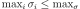
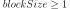

ExpectationSimulationAlgorithm¶
-
class
ExpectationSimulationAlgorithm(*args)¶ Expectation computation using sampling.
Incremental Monte Carlo sampling algorithm to estimate the mean of a random vector
 .
.Parameters: - X :
RandomVector The random vector to study.
See also
Notes
The algorithm can operate on a multivariate random vector
.There are 3 mathematical stopping criteria available:
- through an operator on the coefficient of variation
- through an operator on the standard deviation
- on the maximum standard deviation per component
The criterion on the coefficient of variation is defined using either:
- The maximum:
- The norm-1:
- The norm-2:
The type of operator on the coefficient of variation is set using
setCoefficientOfVariationCriterionType().The default type is set by the ExpectationSimulationAlgorithm-DefaultCoefficientOfVariationCriterionType
ResourceMapkey.The threshold can be set using
setMaximumCoefficientOfVariation().The criterion on the standard deviation is defined using either:
- The maximum: 
- The norm-1:
- The norm-2:
The type of operator on the coefficient of variation can be set using
setStandardDeviationCriterionType().The default type is set by the ExpectationSimulationAlgorithm-DefaultStandardDeviationCriterionType
ResourceMapkey.The threshold can be set using
setMaximumStandardDeviation().The criterion on the maximum deviation per component is defined by
The thresholds can be set using
setMaximumStandardDeviationPerComponent().By default this criterion is disabled.
Examples
>>> import openturns as ot >>> ot.RandomGenerator.SetSeed(0) >>> # Create a composite random vector >>> model = ot.SymbolicFunction(['E', 'F', 'L', 'I'], ['-F*L^3/(3*E*I)']) >>> distribution = ot.Normal([50.0, 1.0, 10.0, 5.0], [1.0]*4, ot.IdentityMatrix(4)) >>> vect = ot.RandomVector(distribution) >>> X = ot.CompositeRandomVector(model, vect) >>> algo = ot.ExpectationSimulationAlgorithm(X) >>> algo.setMaximumOuterSampling(1000) >>> algo.setBlockSize(1) >>> algo.setCoefficientOfVariationCriterionType('NONE') >>> algo.run() >>> result = algo.getResult() >>> expectation = result.getExpectationEstimate() >>> print(expectation) [-1.39543] >>> expectationDistribution = result.getExpectationDistribution()
Attributes: thisownThe membership flag
Methods
drawExpectationConvergence(*args)Draw the expectation convergence at a given level. getBlockSize()Accessor to the block size. getClassName()Accessor to the object’s name. getCoefficientOfVariationCriterionType()Accessor to the criterion operator. getConvergenceStrategy()Accessor to the convergence strategy. getId()Accessor to the object’s id. getMaximumCoefficientOfVariation()Accessor to the maximum coefficient of variation. getMaximumOuterSampling()Accessor to the maximum sample size. getMaximumStandardDeviation()Accessor to the maximum standard deviation. getMaximumStandardDeviationPerComponent()Accessor to the maximum standard deviation. getName()Accessor to the object’s name. getRandomVector()Accessor to the random vector. getResult()Accessor to the result. getShadowedId()Accessor to the object’s shadowed id. getStandardDeviationCriterionType()Accessor to the criterion operator. getVerbose()Accessor to verbosity. getVisibility()Accessor to the object’s visibility state. hasName()Test if the object is named. hasVisibleName()Test if the object has a distinguishable name. run()Launch simulation. setBlockSize(blockSize)Accessor to the block size. setCoefficientOfVariationCriterionType(…)Accessor to the criterion operator. setConvergenceStrategy(convergenceStrategy)Accessor to the convergence strategy. setMaximumCoefficientOfVariation(…)Accessor to the maximum coefficient of variation. setMaximumOuterSampling(maximumOuterSampling)Accessor to the maximum sample size. setMaximumStandardDeviation(…)Accessor to the maximum standard deviation. setMaximumStandardDeviationPerComponent(…)Accessor to the maximum standard deviation. setName(name)Accessor to the object’s name. setProgressCallback(*args)Set up a progress callback. setShadowedId(id)Accessor to the object’s shadowed id. setStandardDeviationCriterionType(criterionType)Accessor to the criterion operator. setStopCallback(*args)Set up a stop callback. setVerbose(verbose)Accessor to verbosity. setVisibility(visible)Accessor to the object’s visibility state. -
__init__(*args)¶ Initialize self. See help(type(self)) for accurate signature.
-
drawExpectationConvergence(*args)¶ Draw the expectation convergence at a given level.
Parameters: - marginalIndex : int
Index of the random vector component to consider
- level : float, optional
The expectation convergence is drawn at this given confidence length level. By default level is 0.95.
Returns: - graph : a
Graph expectation convergence graph
-
getBlockSize()¶ Accessor to the block size.
Returns: - blockSize : int
Number of terms in the probability simulation estimator grouped together. It is set by default to 1.
-
getClassName()¶ Accessor to the object’s name.
Returns: - class_name : str
The object class name (object.__class__.__name__).
-
getCoefficientOfVariationCriterionType()¶ Accessor to the criterion operator.
Returns: - result : str
The criterion operator.
-
getConvergenceStrategy()¶ Accessor to the convergence strategy.
Returns: - storage_strategy :
HistoryStrategy Storage strategy used to store the values of the probability estimator and its variance during the simulation algorithm.
- storage_strategy :
-
getId()¶ Accessor to the object’s id.
Returns: - id : int
Internal unique identifier.
-
getMaximumCoefficientOfVariation()¶ Accessor to the maximum coefficient of variation.
Returns: - coefficient : float
Maximum coefficient of variation of the simulated sample.
-
getMaximumOuterSampling()¶ Accessor to the maximum sample size.
Returns: - outerSampling : int
Maximum number of groups of terms in the probability simulation estimator.
-
getMaximumStandardDeviation()¶ Accessor to the maximum standard deviation.
Returns: - sigma : float,

Maximum standard deviation of the estimator.
- sigma : float,
-
getMaximumStandardDeviationPerComponent()¶ Accessor to the maximum standard deviation.
Returns: - sigmaMax : sequence of float
The maximum standard deviation on each component.
-
getName()¶ Accessor to the object’s name.
Returns: - name : str
The name of the object.
-
getRandomVector()¶ Accessor to the random vector.
Returns: - X :
RandomVector Random vector we want to study.
- X :
-
getResult()¶ Accessor to the result.
Returns: - result :
ExpectationSimulationResult The simulation result.
- result :
-
getShadowedId()¶ Accessor to the object’s shadowed id.
Returns: - id : int
Internal unique identifier.
-
getStandardDeviationCriterionType()¶ Accessor to the criterion operator.
Returns: - result : str
The criterion operator.
-
getVerbose()¶ Accessor to verbosity.
Returns: - verbosity_enabled : bool
If True, the computation is verbose. By default it is verbose.
-
getVisibility()¶ Accessor to the object’s visibility state.
Returns: - visible : bool
Visibility flag.
-
hasName()¶ Test if the object is named.
Returns: - hasName : bool
True if the name is not empty.
-
hasVisibleName()¶ Test if the object has a distinguishable name.
Returns: - hasVisibleName : bool
True if the name is not empty and not the default one.
-
run()¶ Launch simulation.
Notes
It launches the simulation on a sample of size at most outerSampling * blockSize, this sample being built by blocks of size blockSize. It allows to use efficiently the distribution of the computation as well as it allows to deal with a sample size
 by a combination of blockSize and
outerSampling.
by a combination of blockSize and
outerSampling.
-
setBlockSize(blockSize)¶ Accessor to the block size.
Parameters: - blockSize : int, 
Number of terms in the probability simulation estimator grouped together. It is set by default to 1.
Notes
For Monte Carlo, LHS and Importance Sampling methods, this allows to save space while allowing multithreading, when available we recommend to use the number of available CPUs; for the Directional Sampling, we recommend to set it to 1.
-
setCoefficientOfVariationCriterionType(criterionType)¶ Accessor to the criterion operator.
Parameters: - result : str
The criterion operator, either NONE, MAX, NORM1 or NORM2.
-
setConvergenceStrategy(convergenceStrategy)¶ Accessor to the convergence strategy.
Parameters: - storage_strategy :
HistoryStrategy Storage strategy used to store the values of the probability estimator and its variance during the simulation algorithm.
- storage_strategy :
-
setMaximumCoefficientOfVariation(maximumCoefficientOfVariation)¶ Accessor to the maximum coefficient of variation.
Parameters: - coefficient : float
Maximum coefficient of variation of the simulated sample.
-
setMaximumOuterSampling(maximumOuterSampling)¶ Accessor to the maximum sample size.
Parameters: - outerSampling : int
Maximum number of groups of terms in the probability simulation estimator.
-
setMaximumStandardDeviation(maximumStandardDeviation)¶ Accessor to the maximum standard deviation.
Parameters: - sigma : float,
Maximum standard deviation of the estimator.
- sigma : float,
-
setMaximumStandardDeviationPerComponent(maximumStandardDeviation)¶ Accessor to the maximum standard deviation.
Parameters: - sigmaMax : sequence of float
The maximum standard deviation on each component.
If empty, the stopping criterion is not applied.
-
setName(name)¶ Accessor to the object’s name.
Parameters: - name : str
The name of the object.
-
setProgressCallback(*args)¶ Set up a progress callback.
Parameters: - callback : callable
Takes a float as argument as percentage of progress.
-
setShadowedId(id)¶ Accessor to the object’s shadowed id.
Parameters: - id : int
Internal unique identifier.
-
setStandardDeviationCriterionType(criterionType)¶ Accessor to the criterion operator.
Parameters: - result : str
The criterion operator, either NONE, MAX, NORM1 or NORM2
-
setStopCallback(*args)¶ Set up a stop callback.
Parameters: - callback : callable
Returns an int deciding whether to stop or continue.
-
setVerbose(verbose)¶ Accessor to verbosity.
Parameters: - verbosity_enabled : bool
If True, make the computation verbose. By default it is verbose.
-
setVisibility(visible)¶ Accessor to the object’s visibility state.
Parameters: - visible : bool
Visibility flag.
-
thisown¶ The membership flag
- X :